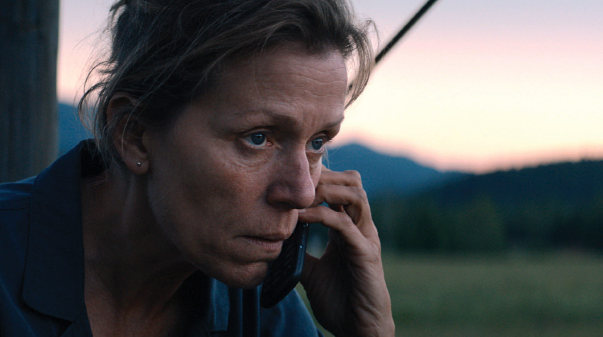

by Michael Simon
There are too many movies about revenge. Sometimes, just by watching a single trailer, a viewer can instantly identify all the beats of a classic tale of revenge. Such movies are dark and brutal and often tear away at the soul of the protagonist until nothing of them remains except for the realization that perhaps revenge is not truly worth it after all. So, after seeing so many movies centered around revenge, it is so incredibly refreshing to see one about forgiveness.
The plot of Three Billboards Outside Ebbing, Missouri revolves around a grieving mother who has lost her daughter under circumstances too awful to recount here. This nightmarish event, as well as a brief but vital flashback detailing the final interaction between mother and daughter, drive Mildred to take certain actions that give the films it’s rather unusual name. Unhappy with the work the local police force has done to find her daughter’s killer, she rents out some billboards just outside of town to publicly shame Police Chief Willoughby – an act that quickly earns her the disapproval of the police force as well as the rest of the town.
One of the more heartwarming things about this film is how quickly viewers are able to recognize this little town; it’s populated with people who seem and act real. None entirely good, none entirely bad. There is charm and wit as much as there is pain and tragedy, all of which comes from the truly phenomenal script at the heart of this movie. Everyone from the ethical billboard salesman who refuses to flinch in the face of threats to the town dwarf who is as hopeless a romantic as they come serves the story in such a way to bring about the revelation that this is not about good versus evil and the struggle for revenge between the two. Rather, this movie is about a small town ripe with flaws and imperfections that allow for both the fear of the impossibility of change as well as the hope that they might learn to move forward.
This more hopeful outlook on the world of the film is best displayed through the development of the three central characters, each of whom undergo their own respective journeys that intersect at key moments in which they grow as human beings. These characters are, of course Frances McDormand’s Mildred, Woody Harrelson’s Chief Willoughby, and Sam Rockwell’s Officer Dixon, all of whom deliver fantastic performances, some heartbreaking, some heartwarming, sometimes enlightening, other times infuriating. This loops back to that first idea of vengeance versus forgiveness; each of these characters wind up in extreme circumstances in one way or another during the film, circumstances that make them choose between a fearful response and a hopeful one.
Understandably, fear occasionally does get the better of them, and the audience watches in fear as these characters sometimes refuse to change and instead slide towards revenge as the only answer to their problems. While these parts are disheartening, they are important to make it clear that none of these people are without flaw as well as showing what these people may succumb to if they let fear dictate their lives. Plus, it makes it all the more refreshing when we see them choose hope instead. Hope in the form of forgiveness. The events of this movie are a crucible for all involved; an experience of such high stakes and pain that any reasonable person would fall apart under similar trauma. The fact that out of this great pain comes a story in which forgiveness is possible makes Three Billboards Outside Ebbing, Missouri one of the most indirectly hopeful movies I have seen in ages. Sometimes it takes a tale of extreme situations to display a basic, universal, fundamental truth about this human experience we all must endure.
For if these people are able to emerge from their lives with hope and the ability to forgive, why can’t we all.